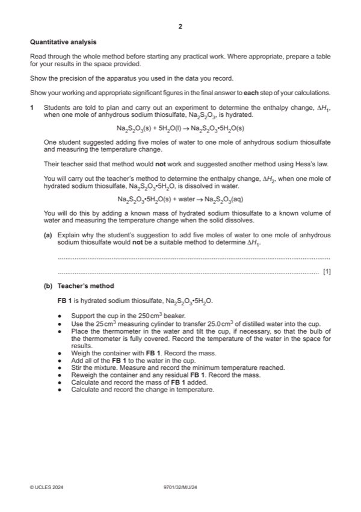
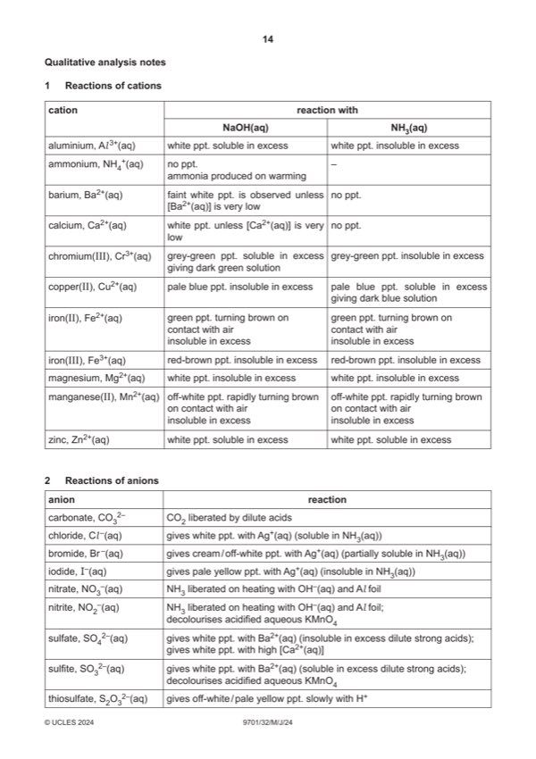

Question 1

Original paper page 2

Original paper page 14
Part 1(a) — solution
- would not all form pentahydrate
- some would dissolve
- cannot (accurately) measure (change in) temperature of a solid
Mark points
- would not all form pentahydrate
- some would dissolve
- cannot (accurately) measure (change in) temperature of a solid
Part 1(b) — solution
Answer: AND thermometer readings to .0 °C or.5 °C · AND written in their table · AND all subtractions correct
- (mass of) container + solid / FB 1
- (mass of) container (+ residue)
- initial thermometer reading / temperature (of water)
- final / lowest thermometer reading / temperature (of solution)
- (mass of) solid (used / added) / FB 1
- change in temperature / T
Mark points
- (mass of) container + solid / FB 1
- (mass of) container (+ residue)
- initial thermometer reading / temperature (of water)
- final / lowest thermometer reading / temperature (of solution)
- (mass of) solid (used / added) / FB 1
- change in temperature / T
Part 1(c)(i) — solution
Answer: AND answer given to 2–4 significant figures (ignore sign)
- energy change = 4.18 temperature change 25 (J)
Mark points
- energy change = 4.18 temperature change 25 (J)
Part 1(c)(ii) — solution
Answer: AND answer given to 2–4 significant figures
- [M1] Correctly uses 2
- [M2] Correct use of
Mark points
- [M1] Correctly uses 2
- [M2] Correct use of
Part 1(c)(iii) — solution
- [M1] diagram with two downward arrows AND correct labels 2
- [M2] H1 = –8.1 – (answer to 1(c)(ii))
Mark points
- [M1] diagram with two downward arrows AND correct labels 2
- [M2] H1 = –8.1 – (answer to 1(c)(ii))
Part 1(d) — solution
(temperature change is) less / decreased because reaction of anhydrous (sodium thiosulfate) is exothermic / causes a 1
temperature increase
University Press & Assessment 2024 Page 7 of 11
9701/32 Cambridge International AS & A Level – Mark Scheme May/June 2024
Mark points
- Include the ideas shown in the solution above.